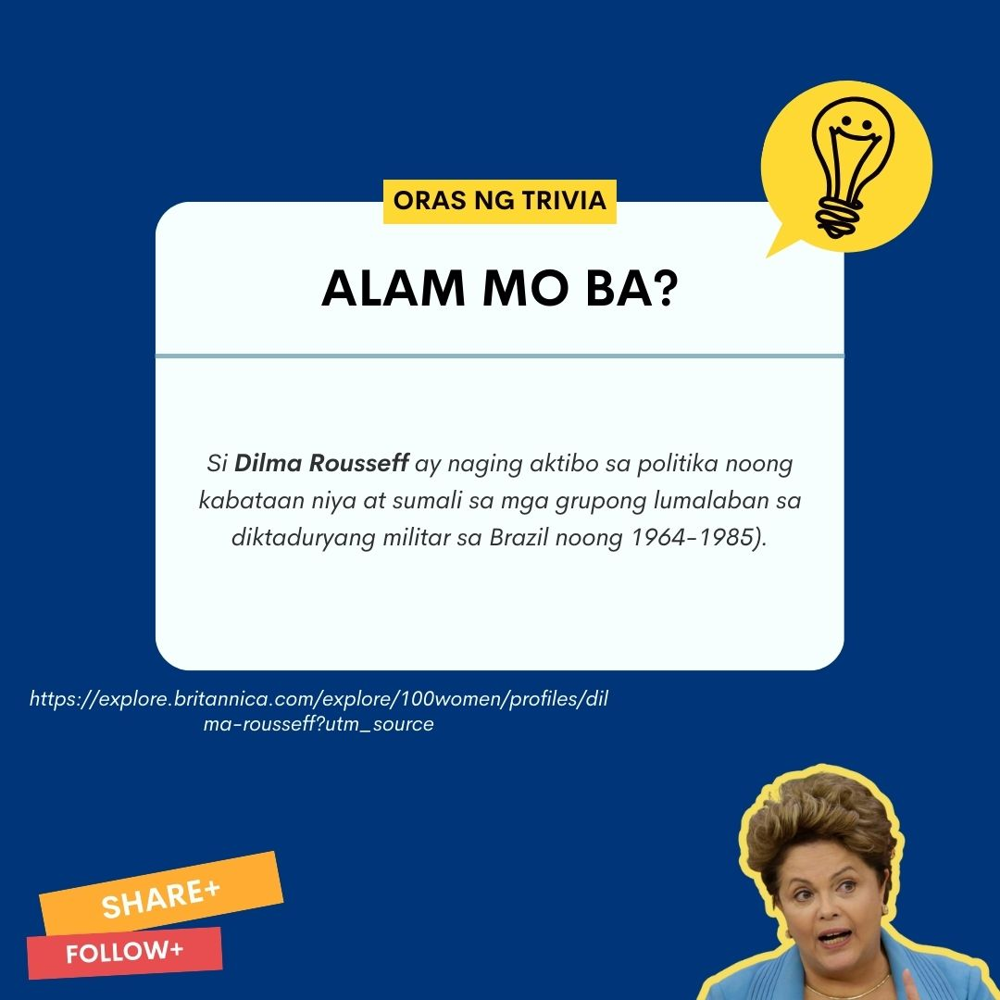
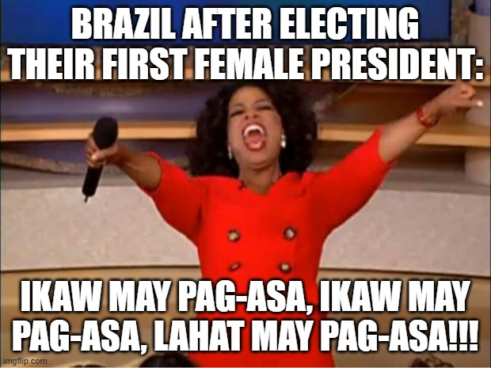
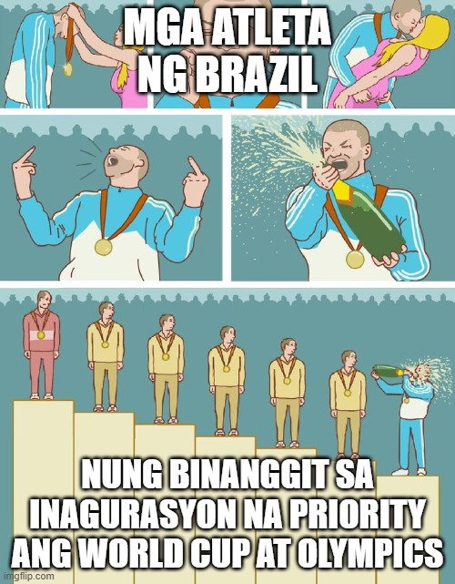

Pinagmulan:Brazil
Sanggunian - Dilma Rousseff Inauguration Speech: Brazil’s First Female President Addresses Congress in Brasilia, kinuha noong Pebrero 26, 2014, mula sa (http://www.huffingtonpost.com/2011/01/03/dilma-rousseff-inaugurati_1_n_803450.html)
Sipi sa Talumpati ni Dilma Rousseff sa Kaniyang Inagurasyon (Kauna-unahang Pangulong Babae ng Brazil)
Enero 1, 2011
Isinalin sa Filipino ni Sheila C. Molina
Minamahal kong Brazilians,
Tinitiyak ng aking pamahalaan na lalabanan at susugpuin ang labis na kahirapan, gayundin, ang lumikha ng mga pagkakataon para sa lahat.
Nakita natin noon sa dalawang terminong panunungkulan ni Pangulong Lula kung paano nagkaroon ng pagkilos sa kamalayang panlipunan. Gayunpaman, nanatili sa kahihiyan ang bansa sapagkat hindi nawala ang kahirapan at nagkaroon ng mga hadlang upang patunayang maunlad na nga tayo bilang mamamayan.
Hindi ako titigil hangga’t may Brazilians na walang pagkain sa kanilang hapag, may mga pamilyang pakalat-kalat sa mga lansangan na nawawalan ng pag-asa, at habang may mahihirap na batang tuluyan nang inabandona. Magkakaroon ng pagkakaisa ang pamilya kung may pagkain, kapayapaan at kaligayahan. Ito ang pangarap na pagsisikapan kong maisakatuparan.
Hindi ito naiibang tungkulin ng isang pamahalaan, isa itong kapasiyahan na dapat gampanan ng lahat sa lipunan. Dahil dito, buong pagpapakumbaba kong hinihingi ang suporta ng mga institusyong pampubliko at pampribado, ng lahat ng mga Partido, mga nabibilang sa Negosyo at mga manggagawa, mga unibersidad, ang ating kabataan, ang pamamahayag, at ang lahat na naghahangad ng kabutihan para sa kapwa.
Sa pagsugpo nang labis na kahirapan, kailangang bigyang priyoridad ang mahabang panahong pagpapaunlad. Ang mahabang panahong pagpapaunlad ay lilikha ng mga hanapbuhay para sa kasalukuyan at sa darating na henerasyon.
Kailangan ang paglagong ito, kasama ang matatag na programang panlipunan upang malabanan ang hindi pantay na kita at pagkakaroon ng rehiyunal na pagpapaunlad.
Nangangahulugang ito at muli kong sasabihin na ang pagpapanatili ng katatagan ng ekonomiya ang pinakamahalaga. Sa nakasanayan na natin, kasama ang matibay na paniniwala na sinisira ng inflation ang ating ekonomiya na nakakaapekto sa kita ng mga manggagawa. Nakatitiyak ako na hindi natin papayagan ang lasong ito na sirain ang ating ekonomiya at magdusa ang mahihirap na pamilya.
Patuloy nating palalakasin ang ating panlabas na pondo upang matiyak na balanse ang panlabas na deposito at maiwasan ang pagkawala nito. Gagawin natin nang walang pag-aalinlangan sa mga multilateral na paraan na ipaglaban ang maunlad at pantay na mga polisiyang pang-ekonomiya, na pangangalagaan ang bansa laban sa hindi maayos na kompetisyon at dapat na maunawaan ang daloy ng kapital na ipinakikipaglaban.
Hindi natin pahihintulutan ang mayayamang bans ana pinapangalagaan ang sariling interes na nagpapahirap sa maraming bansa sa mundo sa kabila ng kanilang sama-samang pagpupunyagi ay walang pagbabagong nagaganap.
Ipagpapatuloy nating mapahusay ang paggastos ng pera ng bayan.
Sa buong kasaysayan ng Brazil, pinili nitong itayo ang isang estado na nagbibigay ng mga pangunahing pangangailangan at kapakanan ng mamamayan.
Malaking halaga ang kakailanganin nito para sa lahat, ngunit nangangahulugan ito na may tiyak na pensiyon, unibersal na pangangalaga sa kalusugan at mga serbisyong pang-edukasyon. Samakatuwid, ang pagpapaunlad ng serbisyo publiko ay kailangan habang isinasaayos natin ang paggastos ng pamahalaan.
Isa pang mahalagang salik sa maayos na paggasta ay ang pagpapataas ng antas ng pamumuhunan sa punto ng pangkaraniwang gastusin sa pagpapatakbo ng negosyo. Mahalaga ang pamumuhunang pampubliko sap ag-iimpluwensiya sa pamumuhunang pampribado at kasangkapan sa rehiyonal na pagpapaunlad.
Sa pamamagitan ng Growth Acceleration Program at My House, My Life Program, pananatilihin natin ang pamumuhunan sa mahigpit at maingat na pagsusuri ng Pangulo ng Republika at ng mga Ministro.
Patuloy na magsisilbing instrument ang Growth Acceleration Program na pagtutulungan ng pagkilos ng pamahalaan at boluntaryong koordinasyon ng pamumuhunang estruktura na binuo ng mga estado at mga munisipalidad. Ituturo rin nito ang pagbibigay ng insentibo sa pamumuhunang pampribado na pinahahalagahan ang lahat ng insentibo upang buuin ang pangmatagalang mga ponding pampribado.
Ang pamumuhunan sa World Cup at Olympics ang magbibigay ng pangmatagalang pakinabang sa kalidad ng pamumuhay sa lahat ng bumubuo ng rehiyon.
Magiging gabay rin ang prinsipyong ito sa polisiya ng panghimpapawid na transportasyon. Walang duda na dapat nang mapaunlad at mapalaki ang ating mga Paliparan para sa World Cup at Olympics. Ngunit ang pagpapaunlad na nabanggit ay nararapat na isagawa na ngayon sa tulong ng lahat ng Brazilian.
TRIVIA BOARD


MEME KORNER

